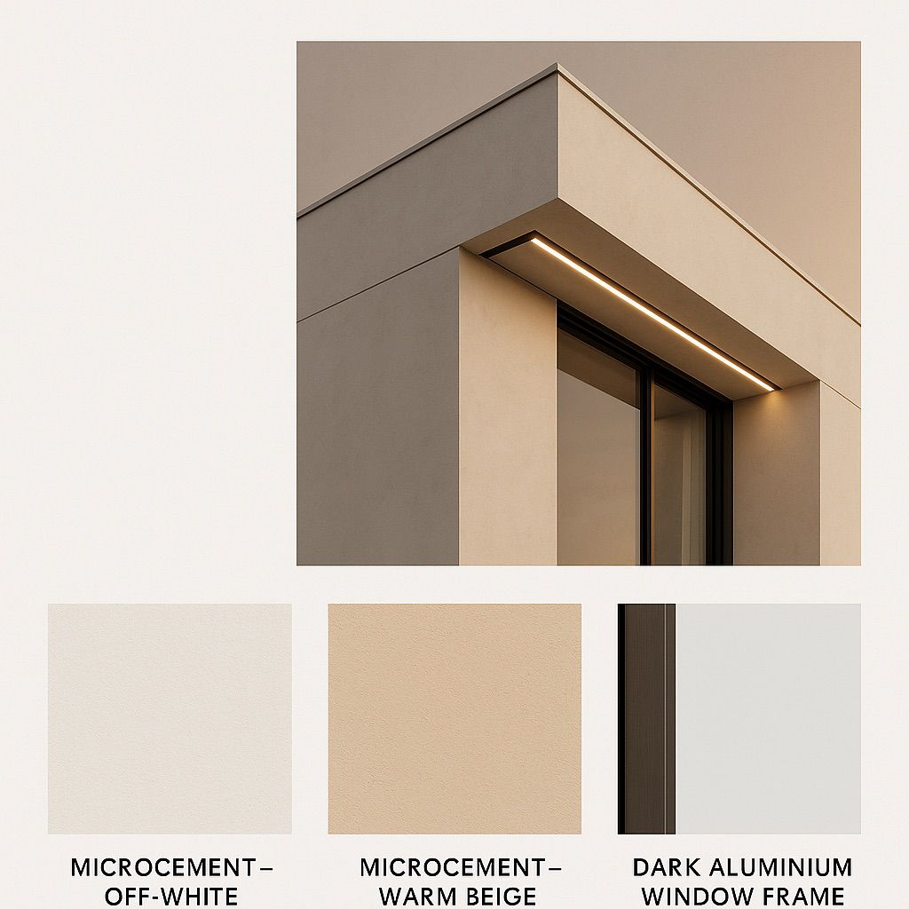
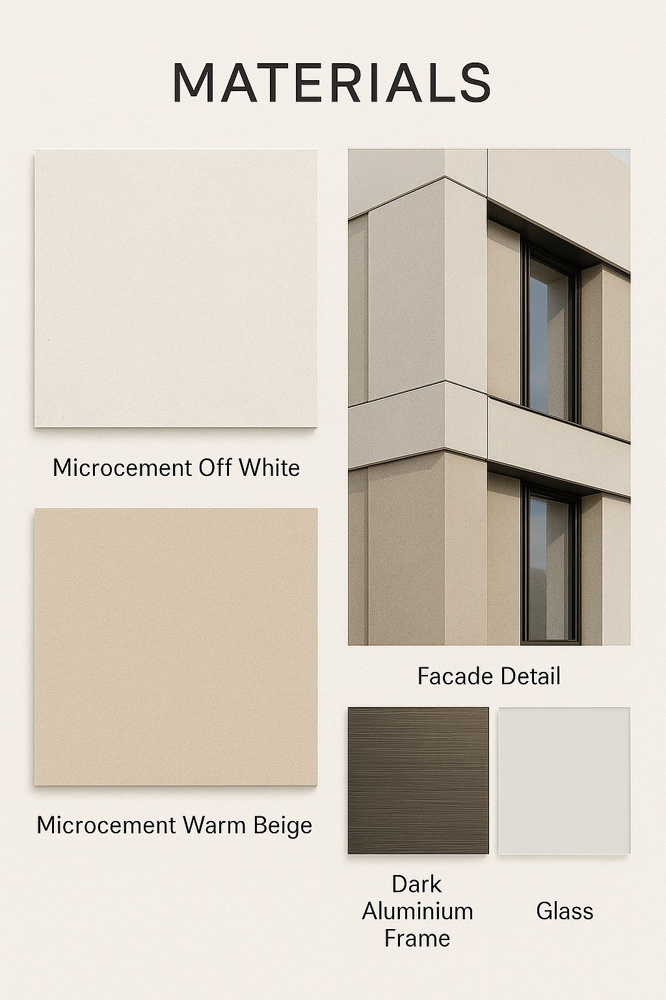
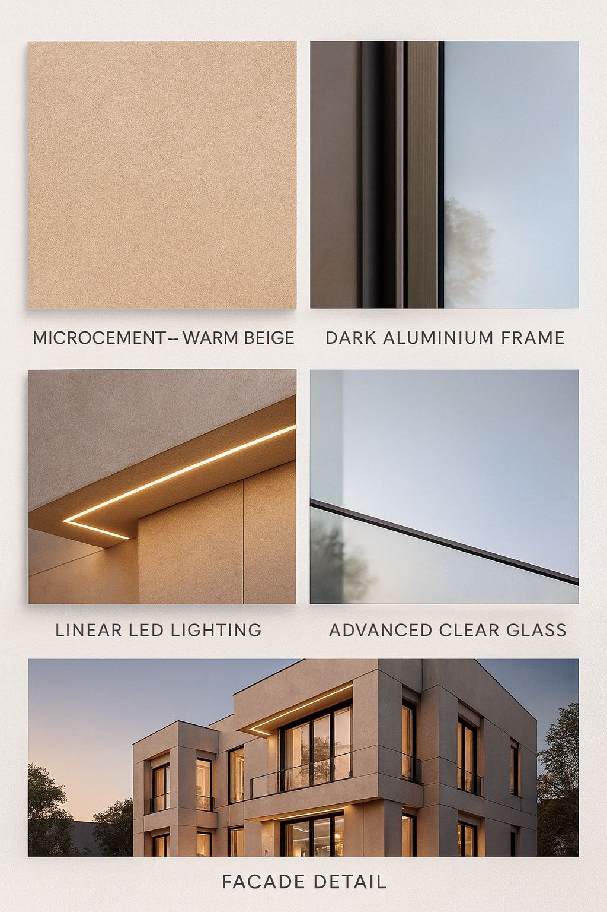

A contemporary two-storey villa defined by clean cubic volumes and a warm, tactile material palette. The facade balances bold modern geometry with the soft tones of the Omani landscape — microcement surfaces in off-white and warm beige, framed by dark aluminium and recessed linear lighting that brings the architecture to life after dusk.
The design emerges from a study of the Omani vernacular — interlocking cubic volumes that create shadow and depth in the harsh afternoon sun. Each form was positioned deliberately to frame internal courtyards and capture the prevailing breeze, balancing openness with the need for privacy and shade.
The villa at dusk — interlocking cubic volumes wrapped in warm microcement, where concealed linear LED lighting traces the architecture.

A study in detail: the crisp meeting of off-white and warm beige microcement, dark aluminium window frames, and a recessed linear light.
Every material was selected for its ability to age gracefully in the Omani climate. Microcement in two tones — off-white and warm beige — forms the primary skin, while dark aluminium frames define the apertures with precision. Advanced clear glazing maximises daylight without sacrificing thermal performance.

The material story — microcement in off-white and warm beige, paired with dark aluminium framing and glass. Each surface was chosen to age gracefully and sit in harmony with its surroundings.
Concealed linear LED lighting was integrated into every horizontal soffit, transforming the facade after dusk. The lighting traces the geometry of the volumes, creating a warm, glowing presence that reads as unmistakably modern yet quietly restrained — a signature that makes the villa recognisable at any hour.

The full material language of the project: warm beige microcement, dark aluminium frames, advanced clear glazing, and linear LED lighting — assembled into a facade that is both timeless and unmistakably modern.
Explore the full portfolio across architecture, interior design, and landscape.